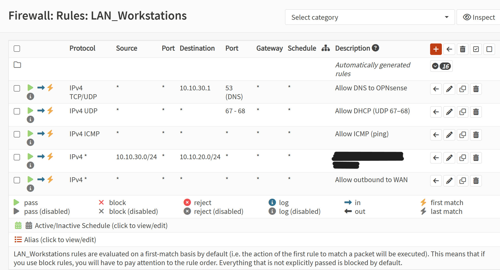
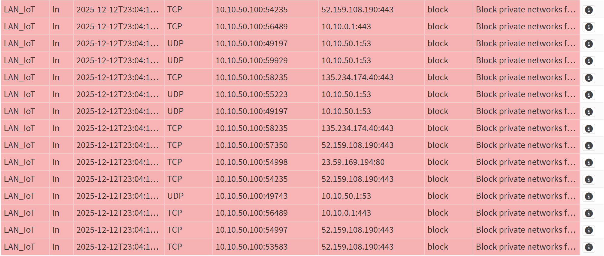
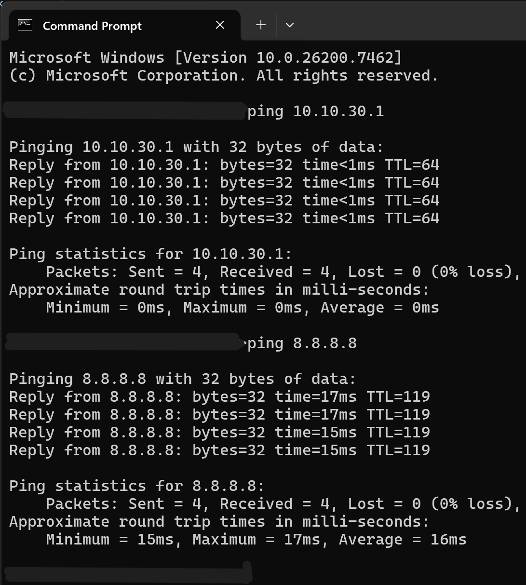
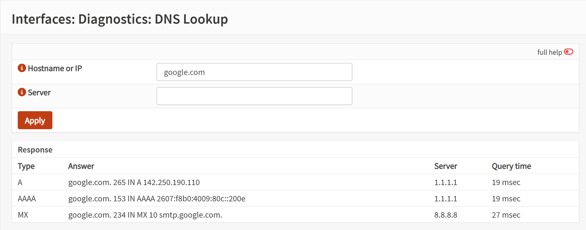

Establish baseline allow/deny rules for trusted VLANs to enforce enterprise-style segmentation.
Tools Used
OPNsense Firewall
Web GUI access
Trusted VLAN configured from previous labs
Client device for validation tests
Browser + screenshot tool
Steps Taken
Opened Firewall → Rules → [Trusted VLAN].
Created allow rules for DNS (TCP/UDP 53), DHCP (UDP 67/68), and ICMP.
Added an outbound allow rule to permit internet access.
Added a final block-all rule with logging enabled.
Applied changes and verified rule order.
Validated DNS resolution, DHCP functionality, ping tests, and internet browsing.
Generated intentional blocked traffic to confirm log visibility.
Screenshot: Firewall Rules (Trusted VLAN)

Click to view full-size: Baseline allow/deny rules for the trusted VLAN.
Screenshot: Firewall Logs (Blocked Traffic)

Click to view full-size: Blocked inter-VLAN traffic logged by OPNsense.
Screenshot: Ping Test

Click to view full-size: Successful ping to gateway and external IP.
Screenshot: DNS Test

Click to view full-size: DNS resolution validated via nslookup or OPNsense diagnostics.
Outcome
The trusted VLAN now enforces a clean, enterprise-style firewall baseline: essential services are allowed, outbound internet is permitted, and all other traffic is explicitly blocked and logged. Validation confirmed DNS, DHCP, ICMP, and internet access function correctly, while unauthorized traffic is denied and visible in the firewall logs. This establishes a secure foundation for further segmentation and policy development.